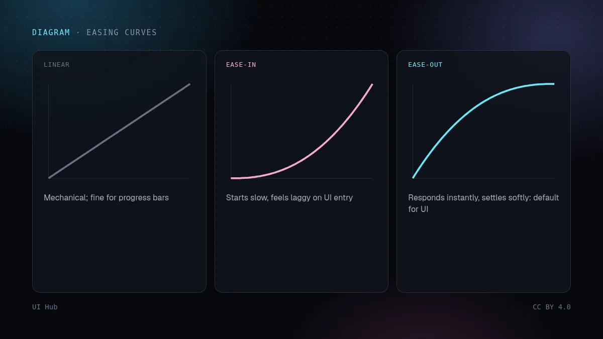
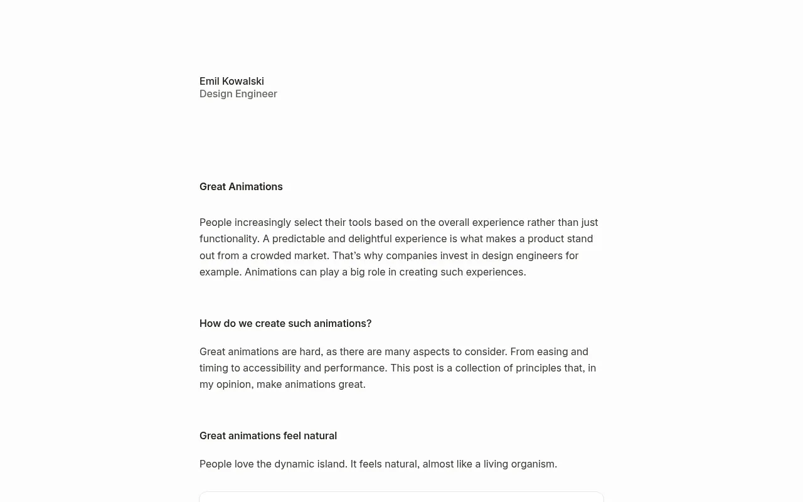
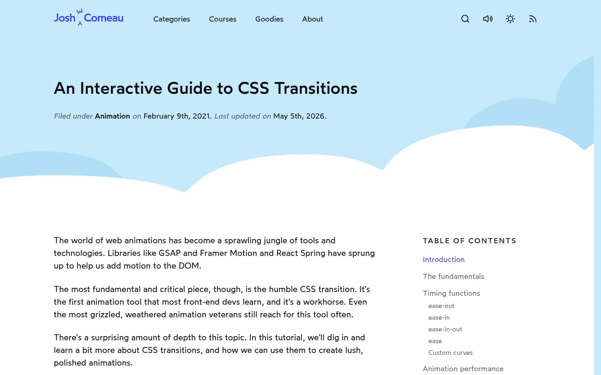

Emil Kowalski 的经验法则很直接：用户一天要触发一百次的操作，就不要加动画。界面里的动效只有三种正当用途：定位（这个东西从哪来、到哪去了）、反馈（你的操作生效了），以及偶尔的愉悦感。其余都是装饰，每次交互都要白白付出时间。这篇给出起步数值、给组件加动效的分步方法、可以直接粘贴的代码，以及让 AI 生成的页面显得廉价的常见错误。

写过渡之前先写一句话："这里加动画，是为了让用户明白 ___。"填不出来，就保持静态。几个例子：

一天打开 50 次的命令面板应该几乎瞬间出现。高频界面保持快速，把动效留给少见的时刻。
transform 和 opacity。动 width、height、top、box-shadow 会让每一帧都触发布局或重绘，在中端手机上会卡。第 1 步：设定变换原点。 从触发按钮处缩放，而不是从中心。Radix 等库会把变换原点暴露成 CSS 变量，可以直接用。
第 2 步：进入和退出分开写。 退出要比进入快，因为用户已经决定离开了。
.menu {
transform-origin: var(--radix-dropdown-menu-content-transform-origin, top left);
}
.menu[data-state="open"] {
animation: menu-in 180ms cubic-bezier(0.16, 1, 0.3, 1);
}
.menu[data-state="closed"] {
animation: menu-out 120ms ease-in;
}
@keyframes menu-in {
from { opacity: 0; transform: scale(0.96) translateY(-4px); }
to { opacity: 1; transform: none; }
}
@keyframes menu-out {
to { opacity: 0; transform: scale(0.98); }
}
第 3 步：尊重"减少动态效果"设置。 有些用户看到移动会晕。保留透明度变化，去掉位移：
@media (prefers-reduced-motion: reduce) {
.menu[data-state="open"],
.menu[data-state="closed"] {
animation-name: fade;
}
@keyframes fade { from { opacity: 0; } to { opacity: 1; } }
}
第 4 步：快速测试。 连续快速开关十次。只要动画挡住了下一次点击，就说明太长或者不能被打断。
对于在位置之间移动的元素（重新排序的列表项、展开的卡片、标签页指示条），弹簧比固定曲线更自然，因为它能响应中途打断。Motion（原 Framer Motion）只需一个属性就能做布局动画：
import { motion } from "motion/react";
<motion.div
layout
transition={{ type: "spring", stiffness: 500, damping: 40 }}
className="tab-indicator"
/>
界面里的弹簧要硬、阻尼要足。弹来弹去的弹簧第一次很有趣，第二十次就很烦。
Aceternity、Magic UI 风格的特效（光束、聚光灯、流星、跑马灯）本来就是为了惊艳而设计的，适合每页一个高光时刻。首屏放聚光灯、logo 条放跑马灯、每张卡片再加动态渐变边框，页面看起来就像模板。AI 生成器一次给你三种特效时，留下最贴合你故事的那一个，其余改成静态。
走查现有页面时，把每个动画列进一张四列表格：元素、触发方式、时长、用途。没有用途的删掉；高频触发的缩短到几乎瞬间；超过 400ms 的必须说出理由。然后按正常速度录屏，再用半速回放：缓动问题、互相重叠的动画、同时朝不同方向移动的元素，这些现场很难察觉的问题都会暴露出来。
0fr 到 1fr 的技巧。用 CSS 过渡还是 JavaScript 库？ 简单的状态变化（hover、开合、淡入淡出）用 CSS：开销小，而且 transform 和 opacity 动画可以不占用主线程。需要布局动画、共享元素过渡、手势或可打断的弹簧时，再用 Motion 这类库。
怎么找出卡顿的动画？ 打开浏览器性能面板，录制触发动画的过程，看有没有长帧、有没有每一帧都在做布局或重绘。在真实的中端手机上，笔记本上看不出的卡顿会非常明显。
加载状态怎么处理？ 带轻微闪光的骨架屏可以用，但闪光要慢、对比度要低。更好的做法是内容一到就显示，而不是等全部到齐再一起淡入。
营销页也要遵守这些规则吗？ 大体要。营销页访问频率低，可以多一个大的高光时刻，但页面上的按钮、菜单和导航，同样要遵守时长、缓动和减少动态效果的限制。
怎么给 AI 生成器交代动效要求？ 直接给数字：时长、缓动曲线、"只动 transform 和 opacity"、"只留一个高光特效"，以及减少动态效果的要求。不给数字，生成器默认会给所有东西加上又慢又飘的过渡。
好的动效大多是隐形的：用户注意到的是界面反应很快，而不是它在动。每个组件先做成静态，只在能说出用途的地方加动效，保持短、用 ease-out，把唯一一个大特效花在故事最需要的地方。Josh Comeau 的 CSS 过渡交互指南是讲缓动曲线为什么重要的最好材料，读一遍之后，你会到处看到糟糕的缓动。
